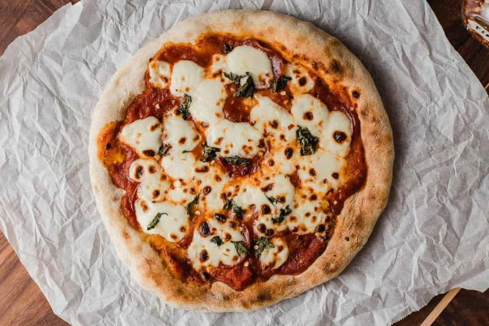
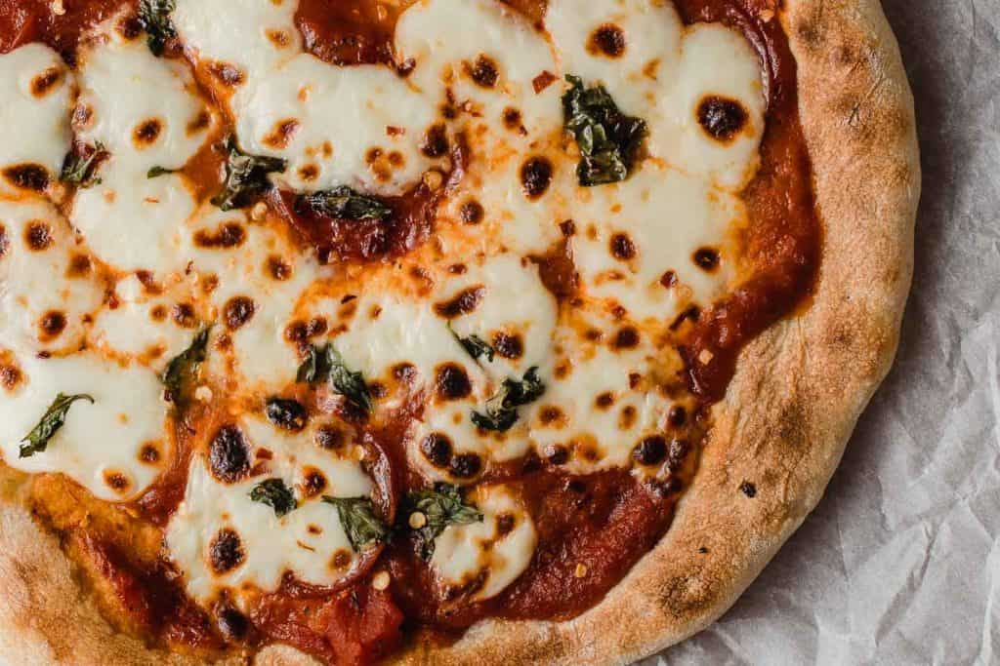
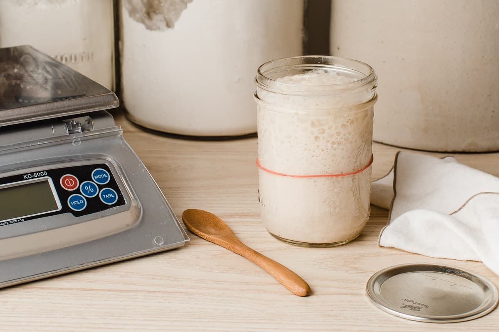

There's no pizza like Sourdough pizza! With a crispy, chewy crust that is perfectly charred on top and bottom and loaded with all the good stuff.
We've developed an easy overnight dough that will hold all your favorite pizza topping and bake to perfection every time.
Get your stretchy pants ready because your won't be able to eat just one slice.
We love all thinks sourdough around here, and pizza crust is right at the top of the list. Especially when it's this easy to make!
This is the perfect recipe to use with your letover sourdough starter discard. Just like out cinnamon rolls, Pancakes, and sourdough biscuits, plan to make the dough the night before you want to bake.
Let the dough ferment on the counter while you sleep and then pop it in the fridge the next morning. Your pizza dough will be waiting for you to bake when you get home from work and you'll be ready to get dinner on the table!
Be sure to check out the recipes for homemade pizza sauce and homemade pesto. the perfect compliment to your pizza!
There are only a few steps standing between you and sourdough pizza crust bliss. Let's get started with the starter!
Sourdough starter is simple to make and maintain. Using two ingredients you while letting nature do the work. A natural fermentation process takes a mixture of wholewheat and all-purpose flour and water to creat natural yeast. Using this natural yeast gives any dough made with this starter a unique flavor
Youll's feed the starter everyday around the same time, so chose morning or evening depending on what is most convinient to your schedule in order to stay consistent.
Mix the all-purpose flour and whole wheat flour until well combined and store in your air tight container. You will use this flour to feed your starter throughout the process.
Start by mixing 1 Cup of the four mixture with 1/2 cup of the bottled or distilled water. Use the rubber scraper to scrape the starter into the galss jar and cover with plastic film using the rubber band to keep the film in place. I like to mark the level of the starter on the side of a jar with a marker to keep track of the activity of the starter.
A note on mixing the starter with your hands. Starter relies on ambient bacteria to help break down the wheat creating sugar from the starch and the natural yeast present in the yeast breaks down the sugar and creates carbon dioxide to aid in the rising of the bread. The human body is covered in bacteria. This added bacteria will aid in the unique flavor of the dough. So roll up those sleves and get your hands dirty!
Wait 24 hours, then check the mixture. Give it a stir to help incorporate a little air.
You should notice some initial bubbling or signs of activity
Starting on day three you will discard most of the starter in the jar and feed it with your flour and water.
Once a day around the same time discard all but 1/4 cup of starter from the jar and feed it with 1 cup of flour and 1/2 cup of water (distilled or bottled)
Repeat this daily, discarding and feeding until your starter becomes active, bubbly, and doubles in size after each feeding. At this point your sourdough starter is ready to use in recipes.
Keep in mind your will want to make the sourdough pizza dough in the morning and let it ferment overnight. Then place it in the fride until you are redy to bake when you get home from work.